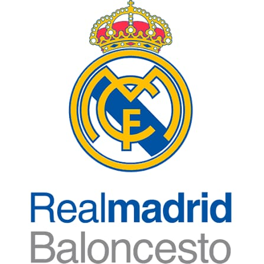
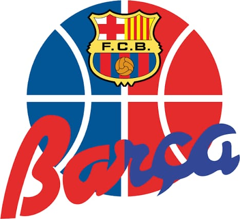
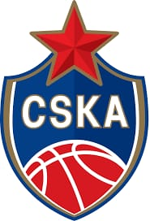
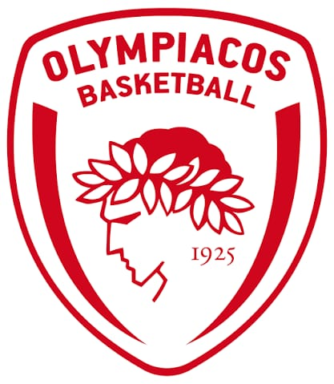

Los equipos más destacados del baloncesto europeo

El Real Madrid Baloncesto es uno de los clubes más prestigiosos de Europa, fundado en 1931. A lo largo de su historia ha ganado más de 30 títulos nacionales y 10 EuroLeague, convirtiéndose en un símbolo del baloncesto continental. El equipo combina experiencia y juventud, destacando por su juego técnico, estrategia precisa y gran capacidad ofensiva. Jugadores legendarios como Luka Dončić, Sergio Llull y Rudy Fernández han dejado huella en la cancha, elevando la fama del club internacionalmente. Además, su estructura profesional y desarrollo de cantera garantizan la formación de talentos de primer nivel, manteniendo al Real Madrid como referente en el baloncesto europeo.

El Barcelona Basket es uno de los clubes históricos de la EuroLeague, fundado en 1926. Ha ganado múltiples títulos nacionales e internacionales, destacando por su disciplina táctica y juego colectivo. Jugadores como Juan Carlos Navarro, Erazem Lorbek y Nikola Mirotić han contribuido a la grandeza del equipo. La filosofía del club combina velocidad, técnica y control de balón, siendo un ejemplo de cómo el baloncesto europeo desarrolla talento de élite. Su estadio, Palau Blaugrana, es reconocido por la intensidad de su afición y su impacto en el rendimiento del equipo.

CSKA Moscú es un equipo emblemático del baloncesto ruso y europeo, con más de 20 títulos nacionales y 8 EuroLeague. Fundado en 1923, ha sido hogar de jugadores como Andrei Kirilenko y Miloš Teodosić. Su estilo combina defensa férrea y ataque dinámico, con énfasis en la táctica y la preparación física. CSKA Moscú se ha mantenido competitivo a nivel continental, destacando por su consistencia y profesionalismo, y su historia refleja la evolución del baloncesto en Europa del Este.

Olympiacos Piraeus es uno de los clubes más importantes de Grecia y de la EuroLeague, fundado en 1925. Ha ganado varios títulos nacionales y dos EuroLeague, destacando por su intensidad defensiva y juego rápido en transición. Jugadores como Vassilis Spanoulis y Giorgos Printezis han marcado la historia del club. Su estilo combina pasión, táctica y compromiso físico, convirtiéndolo en un equipo temido por rivales europeos.